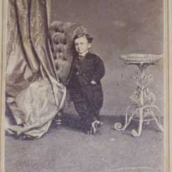

|
| Home | Talent | Cosmetic | Deformity | Abnormal | Ethnological |
Dwarves Among many persons with dwarfism today—determined to vanquish the ridicule that has permeated their history—the current association of dwarfs with freak-related entertainment has provoked irritation, distress, and even outrage. When exploring why some individuals have accepted roles reminiscent of earlier eras, scholars need to pay attention to the views of both critics and performers. A discerning eye is required to examine motivations, assess the satisfactions and problems inherent in each activity for each individual, and consider the ethical issues involved. Among all persons with physical anomalies, there is perhaps no other group whose destiny, in every era, has been so ineluctably shaped by their extraordinary bodies. In contrast to other "born freaks"—persons with anatomical differences exhibited in sideshows, such as bearded ladies, hermaphrodites, and the like—dwarfs, relatively more common than other categories, have not been regarded simply as unique, sporadic occurrences, but rather as a community, or even as a "people." They are also the most recent minority to join the identity procession that marked the last decades of the 20th century, when women, African-Americans, homosexuals, and persons with disabilities sought to explore their history and claim a comfortable seat at society's table.
|